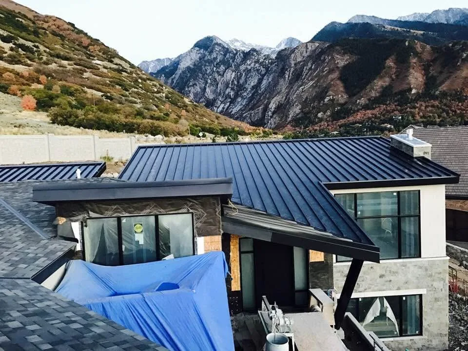
Veteran-owned · Salt Lake City, Utah
A roofing company in Salt Lake City held to one standard.
Utah One Roofing is a veteran-owned roofing company in Salt Lake City for homes and businesses: roof repair and replacement, insurance restoration, flat and metal roofs, gutters and Velux skylights. Free estimates across seven Utah counties.
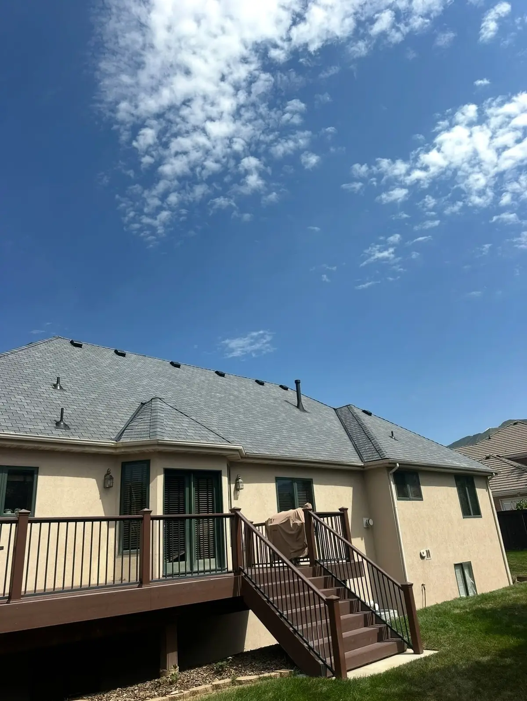
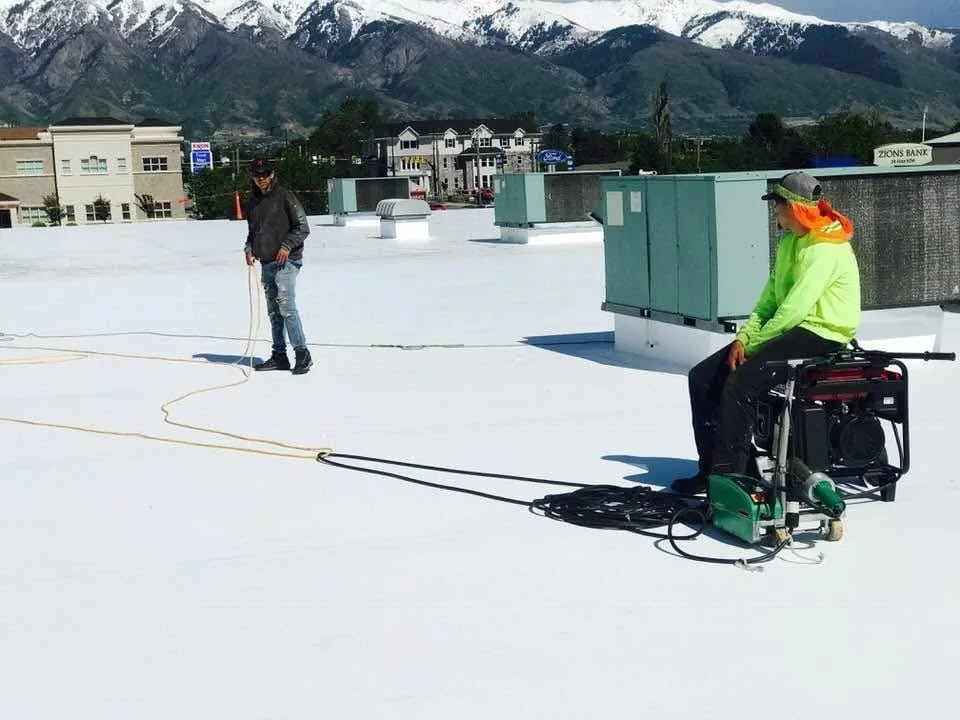
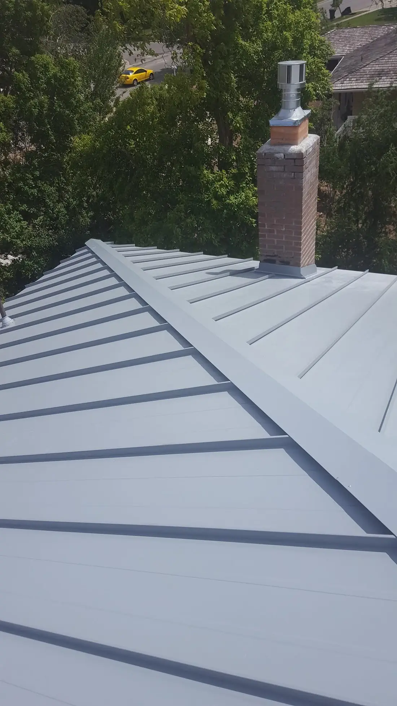
Roofers in Salt Lake City
Five services. One crew.
As roofing contractors in Salt Lake City, we protect homes and businesses with reliable, durable roofs, and fix the ones that need it.
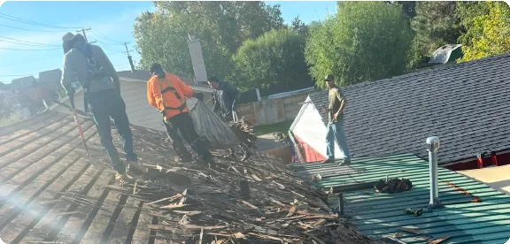
03Roof RepairView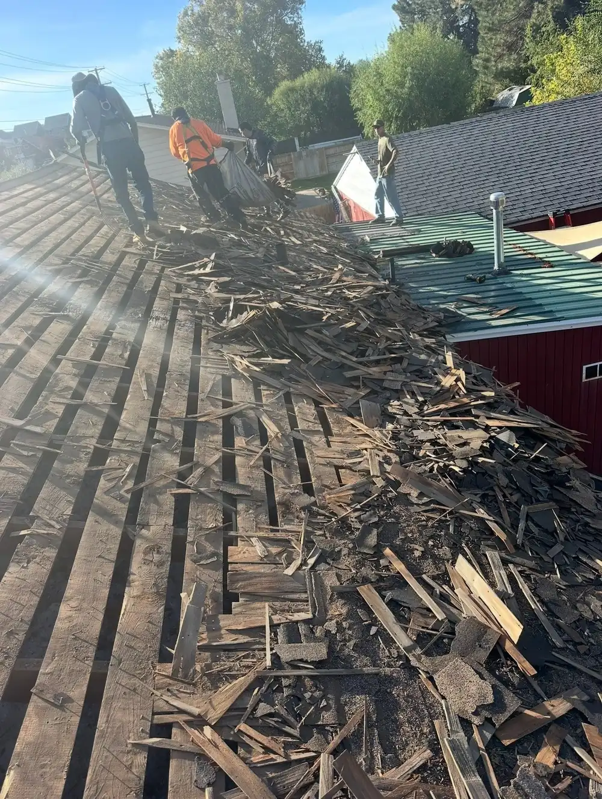
04Insurance RestorationView 05Skylight InstallationView
05Skylight InstallationView All services, including flat roofs, metal, gutters and green roofing
Our process
The One standard, in four steps.
More than a roof: how every Utah One job runs, from the first call to the last swept nail.
- 01
Clear communication
We start with honest, open communication: listening to your needs and keeping you updated every step of the way.
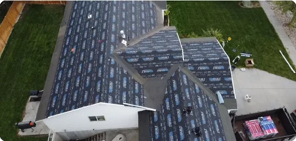
- 02
Custom design & consultation
Together we design a roof that fits your style, budget and property, so it meets your specific goals.
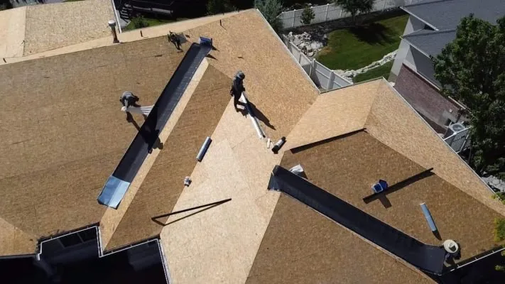
- 03
Expert installation
The team installs your roof with care, using quality materials and proven techniques for lasting results.
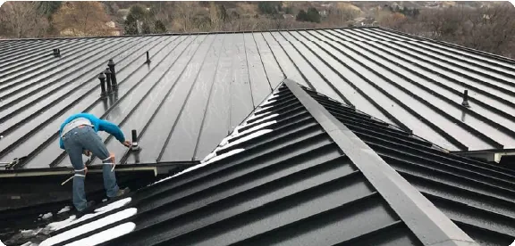
- 04
Thorough cleanup
We protect your property and don’t leave until the work area is spotless, like we were never there.
Field photos
Our roofs, on our crews’ phones.
Shingle, cedar shake, metal and TPO: jobs across the Salt Lake Valley and the Wasatch Front.
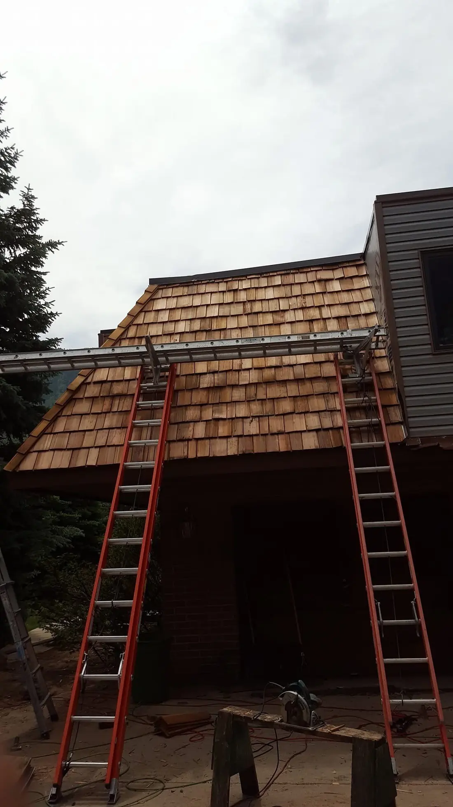
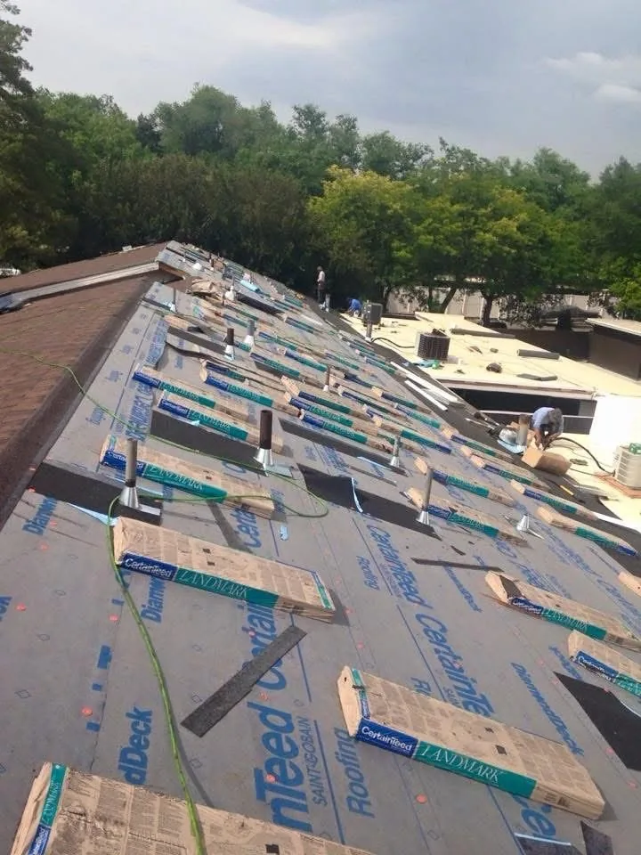
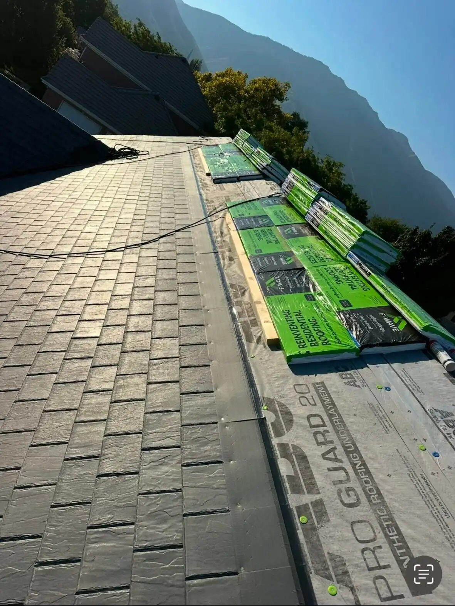
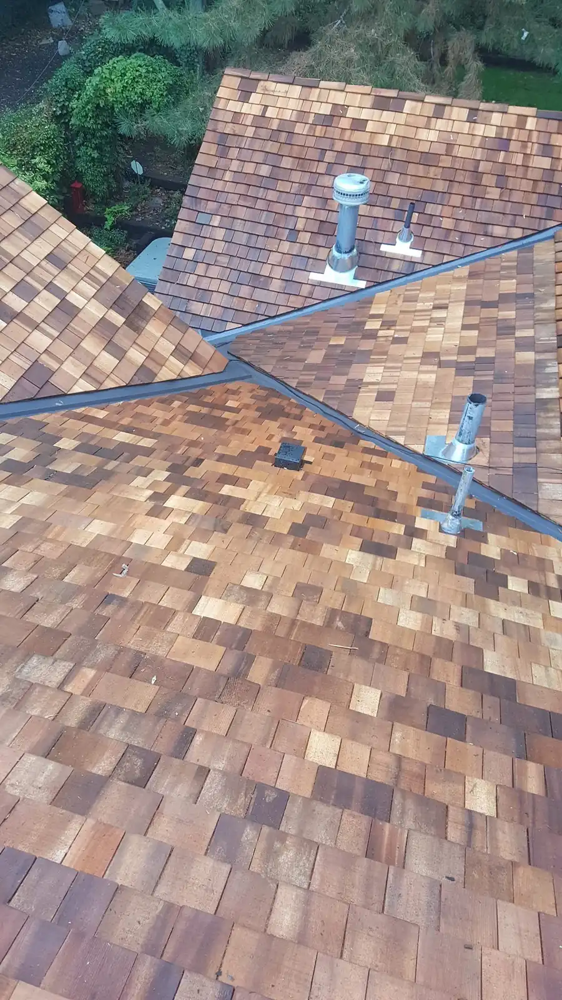
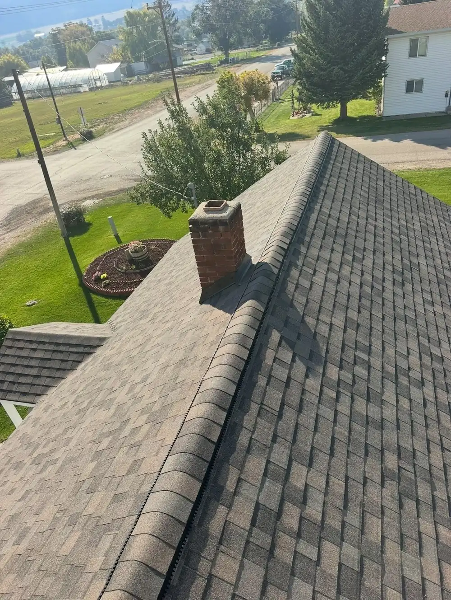
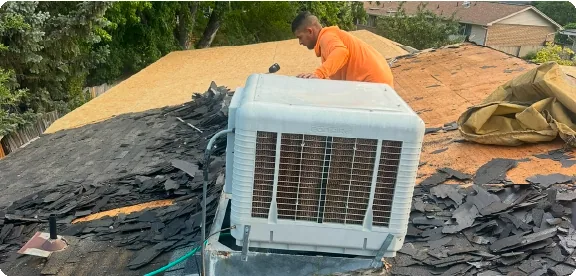
Area of operations
Seven counties, one crew.
We take pride in serving communities across Utah. Call (801) 928-9570 or (385) 223-9811.
- Monday – Friday8:00 AM – 6:00 PM
- Saturday9:00 AM – 5:00 PM
- SundayClosed
- 1Salt LakeCounty
- 2UtahCounty
- 3DavisCounty
- 4SummitCounty
- 5TooeleCounty
- 6WeberCounty
- 7WasatchCounty
Questions
Have questions? Here are answers.
01Is your company licensed and insured?
Absolutely. We’re fully licensed and insured, and we’re happy to provide documentation, like liability and workers’ compensation coverage, along with your estimate.
02How can I tell if my roof needs to be replaced?
Some warning signs include water leaks, missing shingles, visible sagging, or general wear and tear, especially on an older roof. Not sure? We offer professional inspections to assess your roof and guide you on the next steps.
03Will you protect my property during the roofing job?
Yes, always. We take extra precautions to shield your landscaping, outdoor furniture and surrounding areas.
04Is there anything I need to do before the project starts?
We recommend moving any vehicles or items close to the work area. We’ll walk you through all prep steps in advance.
05What happens once the job is done?
After installation we inspect everything thoroughly and clean up the site, so you’re left with a new roof and a tidy yard.
Free estimate
Ready when you are.
Call or send a message for a free estimate. We’ll respond as soon as possible.